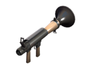
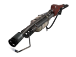
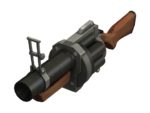
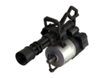
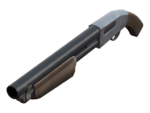
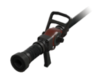
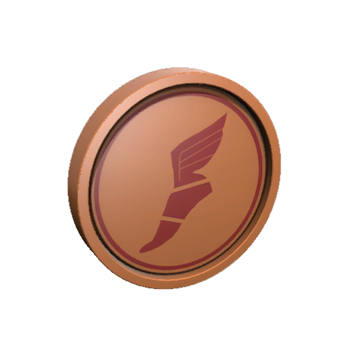

TF2 THINGS - OPINIONS ON WEAPONS SPECIALLY
THIS GAME HAS GOT ME THE SEROTONIN :D
This is where I'll post my stuff with not particular reason other than I find it fun,
my main ideas is things I like, video ideas that I will do eventually,
and better
for last,drawings of my OCs and my world :3.

Tf2 is a hero shooter that I've also been playing since 2026, and I got in love in months, satisfying
movement,
cool looking weapons (my second favourite part), and specially beautiful art style with interesting
characters,
it's a game I really got into and it's my first online hero shooter game I've ever played and probably the
only
one since I don't find the other ones as good as Tf2.
The main sauce
- A topic in specific I want to talk about is the weapons, they are one of the best parts
about
the mechanics and they are, for me, the main part abouT the game, since you can do a lot with them.
Primary Fires








- These are the main sources of damage for most classes,
some of them being so important that without them their
secondary would not stand up for them, like scouts and soldier,
but there are others where it wouldn't change
much, like demo and "spy" (he doesn't have a primary, the gun is
a secondary aswell), but still, this is the core of your playthrough,
the weapon you are going to see the most.
My focus on this part is to tell you my favourite weapons for
this slot and for the others with it's reasons
(though some of them might have more than one,but never more
than 2).


SCOUT - Soda Popper
.This was my pick mostly because is really fun playing
with it, but let me explain it.
.The Soda Popper is a force-a-nature type gun, with only
two shots beofre having to reload it, but to counter it
you have a much faster firing speed and also a special
effect after dealing some damage, in which is a hype
meter that when activated with alt fire you have extra
jumps, up to 5 whole jumps for 10 seconds, and that's
my main reason.
The Jumps
. These jumps helps a lot and you can do quite a lot with
them. These jumps can help you juke enemies so their
tracking worsens and you can kill them easier; you can
help you get into unusual places so you can flank enemies
and get some good pick kills, of course you will loose
a potentially good hype moment to get a med pick or
something but get this:
. If you can be creative and unpredictable with those
extra jumps, you can be just as useful as a normal scout
who will use on the normal places to get these picks,
but you can get killed more easily with using it
normally,and this thing is everything but normal,
literally it's a soda powered shotgun that can make you
jump on the air more times just by using it to kill,
so be strange (not that kind) with it;
. Another way to use it is by using those jumps with
the winger! When the hype is active you can actually use
any weapon, not just the Soda Popper, so you can use the
winger, in which is a pistol that has way lower clip size
for the additions of extra damage (to counter balance the
clip) & a higher jump when active, around 25%, and this is
really good, so with the hype you can have an extra jump
(mathematically speaking, because with 4 jumps you got a
value of 100% of the height, which is just and extra), so
with technically 6.25 jumps at your disposal you can go
wherever you want. You can basically pass through any
high places that normally only the opposing team (normally
blu) can use, and that can make for some
flank routesthat can be really helpful if you can pull it
off, with that you can maybe be like dad's scout...